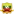
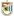
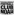
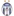
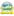
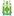

🏆 EURO 2024
| Date | Fixture  Bold-faced team is selected by AIGoalie to win. Bold-faced team is selected by AIGoalie to win. |
Odds Pre-match odds of the selected team winning. Note that odds are fetched once per day at 00:00 GMT, meaning some matches may have live odds. Also odds may not be available for all leagues. |
Win How confident AIGoalie is that the selected team will win. Low confidence indicates unpredictability of the match. ▼ |
Result Whether the selected team won, drew, or lost. |
Over The minimum number of goals predicted by AIGoalie. ⚽ = over 0.5 ⚽⚽ = over 1.5 ⚽⚽⚽ = over 2.5 ... ► |
Alerts Home 🏥 = Considerable injuries 🏥🏥 = Major injuries 📉 = Dip in form Note, you may see injuries when expanding match but no alert here, meaning the model does not consider them important. |
Alerts Away 🏥 = Considerable injuries 🏥🏥 = Major injuries 📉 = Dip in form Note, you may see injuries when expanding match but no alert here, meaning the model does not consider them important. |
|---|
🏆 Copa América 2024
| Date | Fixture Bold-faced team is selected by AIGoalie to win. |
Odds Pre-match odds of the selected team winning. Note that odds are fetched once per day at 00:00 GMT, meaning some matches may have live odds. Also odds may not be available for all leagues. |
Win How confident AIGoalie is that the selected team will win. Low confidence indicates unpredictability of the match. ▼ |
Result Whether the selected team won, drew, or lost. |
Over The minimum number of goals predicted by AIGoalie. ⚽ = over 0.5 ⚽⚽ = over 1.5 ⚽⚽⚽ = over 2.5 ... ► |
Alerts Home 🏥 = Considerable injuries 🏥🏥 = Major injuries 📉 = Dip in form Note, you may see injuries when expanding match but no alert here, meaning the model does not consider them important. |
Alerts Away 🏥 = Considerable injuries 🏥🏥 = Major injuries 📉 = Dip in form Note, you may see injuries when expanding match but no alert here, meaning the model does not consider them important. |
|---|
🌍 Global
| Date | Fixture Bold-faced team is selected by AIGoalie to win. |
Odds Pre-match odds of the selected team winning. Note that odds are fetched once per day at 00:00 GMT, meaning some matches may have live odds. |
Win How confident AIGoalie is that the selected team will win. Low confidence indicates unpredictability of the match. ▼ |
Result Whether the selected team won, drew, or lost. |
Over The minimum number of goals predicted by AIGoalie. ⚽ = over 0.5 ⚽⚽ = over 1.5 ⚽⚽⚽ = over 2.5 ... ► |
Alerts Home 🏥 = Considerable injuries 🏥🏥 = Major injuries 📉 = Dip in form Note, you may see injuries when expanding match but no alert here, meaning the model does not consider them important. |
Alerts Away 🏥 = Considerable injuries 🏥🏥 = Major injuries 📉 = Dip in form Note, you may see injuries when expanding match but no alert here, meaning the model does not consider them important. |
|
|---|---|---|---|---|---|---|---|---|
| Thu. 11 Jul. | Shan United  10:00  Dagon Star United Form: WWDL Form: DW |
1.45 vs -2.45 | 75% | 😴 0.68 |
📉 Home team has a dip in form recently | 📉 Away team has a dip in form recently | ||
| Thu. 11 Jul. | Bala Town  19:00  Paide Linnameeskond Form: DLDD Form: WLWD |
-1.16 vs 1.16 | 1.15 | 72% | ⚽ 1.06 |
📉 Home team has a dip in form recently | 📉 Away team has a dip in form recently | |
| Thu. 11 Jul. | FK Mornar Bar  19:45  Dinamo Tbilisi Form: WWWW Form: DWWL |
-0.97 vs 0.93 | 2.2 | 67% | ⚽ 1.95 |
📉 Away team has a dip in form recently | ||
| Thu. 11 Jul. | FC Bruno's Magpies  17:00  Derry City Form: LLWL Form: WWWL |
-0.94 vs 0.87 | 1.56 | 65% | ⚽ 1.55 |
📉 Home team has a dip in form recently | 📉 Away team has a dip in form recently | |
| Thu. 11 Jul. | Kalev Tallinn  17:30  FC Urartu Yerevan Form: LLWD Form: LWDD |
-0.89 vs 0.83 | 1.39 | 63% | ⚽⚽ 2.65 |
📉 Home team has a dip in form recently | 📉 Away team has a dip in form recently | |
| Thu. 11 Jul. | Atlètic Club d'Escaldes  17:30  F91 Dudelange Form: WLWW Form: WWLW |
0.61 vs -0.61 | 3.0 | 54% | ⚽ 1.92 |
📉 Home team has a dip in form recently | 📉 Away team has a dip in form recently | |
| Thu. 11 Jul. | FC Noah Yerevan  17:00  Shkendija Tetovo Form: WWLW Form: WWLW |
0.57 vs -0.6 | 1.04 | 53% | ⚽ 1.7 |
📉 Home team has a dip in form recently | 📉 Away team has a dip in form recently | |
| Thu. 11 Jul. | La Fiorita 1967  19:45  Isloch Minsk Region Form: DLWW Form: WLDW |
-0.68 vs 0.55 | 1.21 | 52% | 😴 0.8 |
📉 Home team has a dip in form recently | 📉 Away team has a dip in form recently | |
| Thu. 11 Jul. | Caernarfon Town  18:30  Crusaders FC Form: LDWW Form: WLWW |
-0.66 vs 0.53 | 1.24 | 51% | ⚽⚽⚽ 3.32 |
📉 Away team has a dip in form recently | ||
| Thu. 11 Jul. | Torpedo Kutaisi  18:00  KF Tirana Form: WWWW Form: LLDW |
0.49 vs -0.53 | 1.09 | 49% | ⚽⚽ 2.57 |
📉 Away team has a dip in form recently | ||
| Thu. 11 Jul. | FC UNA Strassen  18:00  Kuopion Palloseura Form: DWWL Form: WLWW |
-0.49 vs 0.49 | 1.83 | 49% | ⚽⚽ 2.05 |
📉 Home team has a dip in form recently | 📉 Away team has a dip in form recently | |
| Thu. 11 Jul. | Wisla Kraków  19:30  KF Llapi Form: DLLL Form: DWLW |
0.45 vs -0.58 | 1.13 | 46% | ⚽ 1.8 |
📉 Home team has a dip in form recently | 📉 Away team has a dip in form recently | |
| Thu. 11 Jul. | Vaasan Palloseura  18:00  FK Zalgiris Vilnius Form: DLLL Form: WWLL |
-0.4 vs 0.4 | 2.3 | 42% | ⚽ 1.91 |
📉 Home team has a dip in form recently | 📉 Away team has a dip in form recently | |
| Thu. 11 Jul. | Torpedo-BelAZ Zhodino  19:00  FC Milsami Orhei Form: WWLW Form: WLDD |
0.4 vs -0.42 | 1.96 | 42% | 😴 0.92 |
📉 Home team has a dip in form recently | 📉 Away team has a dip in form recently | |
| Thu. 11 Jul. | Stjarnan Gardabaer  20:00  Linfield FC Form: WLWL Form: DDDL |
-0.44 vs 0.39 | 41% | ⚽⚽ 2.14 |
📉 Home team has a dip in form recently | 📉 Away team has a dip in form recently | ||
| Thu. 11 Jul. | NK Bravo  17:00  Connah's Quay Nomads Form: DDDW Form: WDLW |
0.33 vs -0.33 | 1.04 | 36% | ⚽⚽ 2.12 |
📉 Home team has a dip in form recently | 📉 Away team has a dip in form recently | |
| Thu. 11 Jul. | Shelbourne FC  19:45 St Joseph's FC Form: LLLD Form: WWWD |
-0.28 vs 0.28 | 1.12 | 33% | ⚽ 1.8 |
📉 Home team has a dip in form recently | ||
| Thu. 11 Jul. | FA Siauliai  16:00  FCI Levadia Form: DDWW Form: WWWW |
0.12 vs -0.35 | 2.12 | 20% | ⚽⚽ 2.12 |
🏥 Home team has considerable injuries | ||
| Thu. 11 Jul. | FC Malisheva  16:00  Buducnost Podgorica Form: LLWD Form: LLWW |
-0.17 vs 0.1 | 3.1 | 18% | ⚽⚽ 2.62 |
📉 Home team has a dip in form recently | 📉 Away team has a dip in form recently | |
| Thu. 11 Jul. | Floriana FC  18:00  SP Tre Penne Form: LLWL Form: LDDW |
0.1 vs -0.44 | 1.04 | 18% | ⚽⚽⚽ 3.03 |
📉 Home team has a dip in form recently | 🏥🏥 📉 Away team has MAJOR injuries and a dip in form recently | |
| Thu. 11 Jul. | FC Sheriff Tiraspol  Unknown  Zira FC Form: DWLW Form: LWWL |
0.08 vs -0.24 | 1.66 | 16% | 😴 0.52 |
📉 Home team has a dip in form recently | 📉 Away team has a dip in form recently | |
| Thu. 11 Jul. | Paksi FC  Unknown  CS Corvinul 1921 Hunedoara Form: DDWW Form: WLWL |
0.07 vs -0.07 | 1.04 | 15% | ⚽⚽ 2.24 |
📉 Away team has a dip in form recently | ||
| Thu. 11 Jul. | MFK Ruzomberok Unknown  Tobol Kostanay Form: WLDL Form: LDWW |
0.05 vs -0.05 | 1.88 | 14% | ⚽ 1.86 |
📉 Home team has a dip in form recently | ||
| Thu. 11 Jul. | Valur Reykjavík  20:00  KF Vllaznia Form: LLDW Form: DLDL |
-0.06 vs 0.05 | 1.28 | 14% | ⚽⚽ 2.06 |
📉 Home team has a dip in form recently | 📉 Away team has a dip in form recently | |
| Thu. 11 Jul. | Tikves Kavadarci  16:00  Breidablik Kópavogur Form: WLDD Form: DLLD |
-0.09 vs 0.04 | 1.39 | 13% | ⚽⚽⚽ 3.09 |
📉 Home team has a dip in form recently | 📉 Away team has a dip in form recently | |
| Thu. 11 Jul. | FK Aktobe  16:00  FK Sarajevo Form: LWLL Form: WWDD |
-0.06 vs 0.02 | 1.26 | 11% | ⚽⚽ 2.05 |
📉 Home team has a dip in form recently | 📉 Away team has a dip in form recently | |
| Thu. 11 Jul. | IF Elfsborg  Unknown  Pafos FC Form: LWLL Form: WDDW |
0.01 vs -0.01 | 1.04 | 11% | ⚽ 1.65 |
📉 Home team has a dip in form recently | 📉 Away team has a dip in form recently | |
| Thu. 11 Jul. | FK Liepaja  16:00  Víkingur Gøta Form: LLLL Form: WLLW |
-0.01 vs 0.01 | 1.04 | 11% | ⚽⚽⚽ 3.06 |
📉 Home team has a dip in form recently | 📉 Away team has a dip in form recently | |
| Thu. 11 Jul. | FK Partizani  19:00  Marsaxlokk FC Form: WWWL Form: WWWL |
-0.06 vs 0.0 | 1.17 | 10% | ⚽ 1.52 |
📉 Home team has a dip in form recently | 📉 Away team has a dip in form recently | |
| Thu. 11 Jul. | Botev Plovdiv  Unknown  NK Maribor Form: WLLL Form: DWWD |
-0.03 vs -0.01 | 2.74 | 10% | ⚽⚽ 2.25 |
📉 Home team has a dip in form recently |
Last updated 06:50:03 2024-07-09
Privacy Policy - 18+. Gamble Responsibly. - Terms